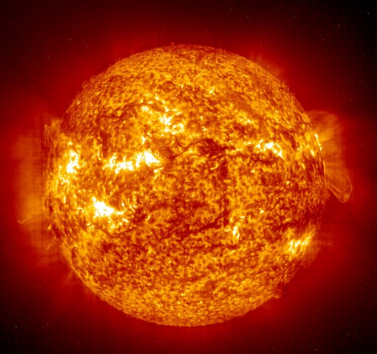
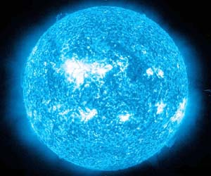

Above The Earth
Ten Biggest Star in Universe
| Canis MaJoris | Vy Canis Majoris is about 4900 light years from the Earth. Of all known stars, the Vy Canis Majoris is the biggest star in the universe. They called this star HYper Giant.I has a radius of 987.894 million km |
|---|---|
| VV Cephei | VV Cephei, also known as HD 208816, is an eclipsing binary star system located in the constellation Cepheus, approximately 5,000 light years from Earth. It is both a B[e] star and shell star. VV Cephei is an eclipsing binary with the second longest known period. |
| Mu Cephei | Mu Cephei is visually nearly 100,000 times brighter than the Sun, with an absolute visual magnitude of −7.6. It is also one of the largest known stars with an estimated radius over 1,000 times that of the sun, and were it placed in the Sun's position it would reach between the orbit of Jupiter and Saturn. |
| Betelgeuse | Betelgeuse, also designated Alpha Orionis, is on average the ninth-brightest star in the night sky and second-brightest in the constellation of Orion. It is distinctly reddish, and is a semiregular variable star whose apparent magnitude varies between 0.0 and 1.3, the widest range of any first-magnitude star. |
| Antares | Antares, also designated Alpha Scorpii, is on average the fifteenth-brightest star in the night sky, and the brightest star in the constellation of Scorpius. Distinctly reddish when viewed with the naked eye, Antares is a slow irregular variable star that ranges in brightness from apparent magnitude +0.6 to +1.6. |
| Rigel  | Rigel, also designated Beta Orionis, is generally the seventh-brightest star in the night sky and the brightest star in the constellation of Orion—though periodically it is outshone within the constellation by the variable Betelgeuse. |
| Aldebaran | The planetary systems of stars other than the Sun and the Solar System are a staple element in much science fiction. Aldebaran (Alpha Tauri) is a type K5 giant star in the constellation Taurus that is frequently featured in works of science fiction. There have been claims by astronomers using radial velocity measurements that Aldebaran hosts a planetary system with at least one substellar companion, but none of these has been confirmed as of 2013. Aldebaran is a popular subject for ancient myths in multiple cultures (Inuit, Mexican, Native American) and, in more recent times, the mythologizing of science fiction |
| Acturus | Arcturus, also designated Alpha Boötis, is the brightest star in the constellation of Boötes, the fourth-brightest in the night sky, and the brightest in the northern celestial hemisphere. |
| Pollux | Pollux, also designated Beta Geminorum, is an orange-hued evolved giant star approximately 34 light-years from the Sun in the northern constellation of Gemini. It is the brightest star in the constellation of Gemini and the closest giant star to the Sun |
| irius | Sirius is a star system and the brightest star in the Earth's night sky. With a visual apparent magnitude of −1.46, it is almost twice as bright as Canopus, the next brightest star. The system has the Bayer designation Alpha Canis Majoris. |